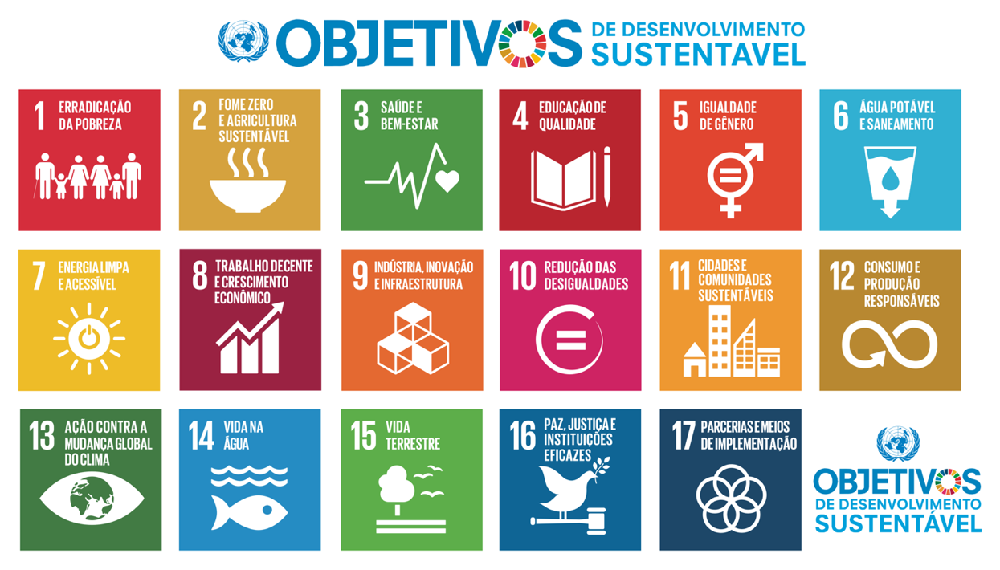

Você sabia que apesar de ser chamado de Terra 71% da superfície do nosso planeta é coberta por água?
Dessa água toda, a maior parte, cerca de 96,5%, é composta por água salgada dos mares e bacias oceânicas!
Sem o Oceano, a vida na Terra não é possível! E apesar de sua inegável importância para nós, seres humanos, nossa falta de atenção com ele tem impactado suas águas e toda a vida que depende dela. Inclusive a nossa.
Para garantir a saúde do planeta, temos que olhar para o Oceano e mudar nossa relação com ele. Ao longo dos anos, a preocupação com qualidade do Oceano vem ganhando cada vez mais atenção nas discussões internacionais, chamando todas as pessoas para a ação. Aqui você conhece os principais movimentos em prol do Oceano e como se envolver com eles!
Vamos mergulhar?
IMAGEM a direitaAdotada em 2015, a Agenda 2030 é um plano global com 17 Objetivos de Desenvolvimento Sustentável (ODS) e 169 metas específicas a serem alcançadas até o ano de 2030. Ela foi proposta pela Organização das Nações Unidas como um plano abrangente para abordar os desafios globais mais prementes, como a pobreza, a desigualdade, a degradação ambiental e a falta de acesso a serviços essenciais, como educação e saúde.
Reconhecendo a importância do Oceano para a vida na Terra, o ODS 14 busca promover a conservação e uso sustentável do Oceano, dos mares e dos recursos marinhos para o desenvolvimento sustentável. Ele é composto por 10 metas específicas:
O Brasil foi um dos países a adotar a Agenda 2030 e vem desenvolvendo ações para sua implementação. Mas ainda temos muito o que avançar. A cada ano, o Grupo de Trabalho da Sociedade Civil para a Agenda 2030 lança um relatório sobre a implementação da Agenda 2030 no país.
O movimento pela Cultura Oceânica (do inglês, ocean literacy) teve início, nos Estados Unidos, em 2004. Ele se baseia no papel transformador da educação para sensibilizar as pessoas para a necessidade e a responsabilidade com a conservação do Oceano, apresentando 7 princípios que uma pessoa deve dominar ao fim do ensino médio para ser considerada “alfabetizada sobre oceano”:
Em busca da “ciência que precisamos para o oceano que queremos”, a Década das Nações Unidas da Ciência Oceânica para o Desenvolvimento Sustentável é um chamado para cooperação entre diversos setores para fomentar investimentos para ação integrada, desenvolvimento tecnológico e produção de conhecimento que possa auxiliar no desenvolvimento de políticas públicas que promovam a recuperação da saúde do Oceano e novos modelos de desenvolvimento sustentável.
Apostando em uma ciência transformadora e alinhada com a sociedade, a Década do Oceano busca:
No Brasil, as ações da Década acontecem em todo o território e são coordenadas pelo Ministério da Ciência, Tecnologia e inovação - MCTI.